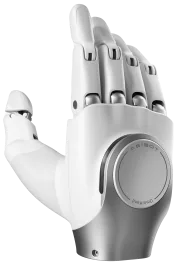
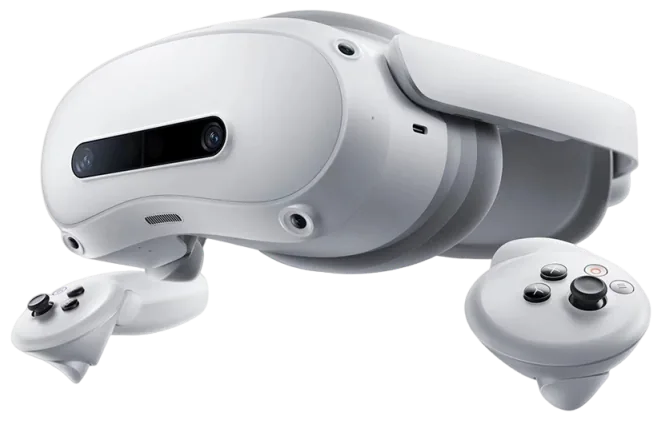

RHX2 Ultra Humanoide programable con percepción 3D y NVIDIA Orin NX
LiDAR 3D, cuatro cámaras y una unidad de computación para desarrollo en el formato de 1,31 m de la serie X2, con SDK para crear tus propias aplicaciones.
- Altura1,31 m
- Peso39 kg
- Grados de libertad30
- ComputaciónNVIDIA Orin NX 16 GB

PVP 38.500 €
¿Qué es el RHX2 Ultra?
El RHX2 Ultra es la configuración superior de la serie X2. Añade brazos de 7 grados de libertad, LiDAR 3D, cámaras RGB-D, binocular y trasera, conectividad 4G/5G y una unidad NVIDIA Orin NX de 16 GB para desarrollo secundario. Está pensado para visitas guiadas, retail, actuaciones e investigación.
Percepción 3D
LiDAR 3D y cámaras RGB-D, binocular, de interacción y trasera: cartografía en un solo recorrido y navegación que evita obstáculos estáticos y dinámicos.
Brazos de 7 grados de libertad
Alcance de aprox. 570 mm y 3 kg de carga; admite mano artificial, pinza OmniPicker y mano diestra OmniHand.
Atención autónoma
Reconocimiento facial y saludo proactivo, respuestas a partir de una base de conocimiento y explicaciones en varios idiomas, con más de 30 expresiones faciales.
Plataforma de desarrollo
Unidad Orin NX de 16 GB, SDK de desarrollo secundario y compatibilidad con LinkCraft y LinkSoul; estación de carga y teleoperación opcionales.
Aplicaciones del RHX2 Ultra
Escenarios en los que encaja el RHX2 Ultra.
- Recepción y orientación en tiendas
- Captación y guiado de clientes
- Visitas guiadas en salas de exposición
- Actuaciones guiadas
- Teleoperación y presencia remota
- Investigación y educación
Especificaciones técnicas del RHX2 Ultra
Dimensiones y estructura
| Altura | 1,31 m |
|---|---|
| Dimensiones de pie | 1.310 × 460 × 210 mm (± 30 mm), alto × ancho × fondo |
| Dimensiones del embalaje | 945 × 705 × 475 mm |
| Peso neto | aprox. 39 kg, con batería y efector |
| Peso con embalaje | aprox. 67,5 kg |
| Materiales | aleación de aluminio, aleación de magnesio, plástico técnico de alta resistencia y espuma de PU |
| Temperatura de funcionamiento | −10 a 40 °C (a −10 °C bajan el rendimiento y la autonomía) |
Articulaciones
| Grados de libertad activos | 30 |
|---|---|
| Cabeza | 1 |
| Brazos | 7 por brazo |
| Cintura | 3 (giro, cabeceo y guiñada) |
| Piernas | 6 por pierna |
| Par máximo articular | 120 Nm |
Movilidad y navegación
| Velocidad máxima | ≤ 1,8 m/s corriendo (hoja de datos) · 2 m/s (folleto) |
|---|---|
| Velocidad de uso diario | ≤ 0,8 m/s |
| Altura máxima de escalón | 50 mm |
| Franqueo de obstáculos | 50 mm |
| Pendiente | ± 10° |
| Anchura mínima de pasillo para girar | 900 mm |
| Anchura mínima de paso | 600 mm |
| Navegación | cartografía multidimensional, planificación de rutas autónoma y evitación de obstáculos estáticos y dinámicos |
| Recarga autónoma | vuelta a la estación de carga opcional |
| Acciones integradas | 20 o más |
Brazos y manipulación
| Alcance de un brazo sin efector | aprox. 570 mm |
|---|---|
| Carga máxima | 3 kg en postura específica, sin contar el efector |
| Carga en todo el espacio de trabajo | ≤ 1 kg, sin contar el efector |
| Efectores compatibles | mano artificial, pinza OmniPicker y mano diestra OmniHand |
Percepción
| Cámaras | 1 × RGB de interacción · 1 × RGB binocular · 1 × RGB-D · 1 × RGB trasera |
|---|---|
| LiDAR | 1 × LiDAR 3D |
| Sensor de movimiento | 1 × IMU de 6 ejes |
| Táctil | sensor en la cabeza |
Interacción
| Audio | altavoz y matriz de micrófonos |
|---|---|
| Pantalla | pantalla de expresiones, con más de 30 expresiones faciales |
| Funciones | reconocimiento facial, saludo proactivo, preguntas y respuestas sobre base de conocimiento y explicación en varios idiomas |
| Presentaciones | herramienta integrada para crear y editar explicaciones, gestos, voz, recorridos y secuencias de movimiento |
| Control | mando a distancia, aplicación AGIBOT Go y voz (prioridad en ese orden) |
Computación
| Unidad de control | 1 × RK3588S y 1 × RK3588 |
|---|---|
| Unidad de computación para desarrollo | NVIDIA Orin NX 16 GB |
Energía
| Batería | aprox. 500 Wh |
|---|---|
| Autonomía | aprox. 2 h caminando a 0,5 m/s |
| Tiempo de carga | aprox. 1,5 h, del 15 % al 100 % |
| Consumo típico | aprox. 240 W |
| Recarga | carga directa, cambio de batería y estación de carga autónoma opcional |
Comunicaciones y puertos
| Conectividad | Wi-Fi · Bluetooth · 4G/5G · GPS |
|---|---|
| Puertos de depuración | 2 × USB-C · 2 × USB-A · 2 × RJ45 |
| Salidas de alimentación | 1 × 12 V/3 A · 1 × 48 V/5 A |
Desarrollo y opciones
| Desarrollo secundario | sí, con SDK |
|---|---|
| LinkCraft | entrenamiento de movimientos sin código, imitación de acciones, narración por voz y actuaciones coordinadas en grupo |
| LinkSoul | personalidad del robot, palabras de activación y tonos de voz personalizables |
| Accesorios opcionales | manos diestras y pinzas, estación de carga automática, teleoperación más allá del alcance visual con equipo de realidad virtual y equipo de computación en el borde |
Suministro y garantía
| Incluye | robot, batería y cargador, mando a distancia, parada de emergencia inalámbrica, guía rápida y certificado de conformidad |
|---|---|
| Garantía | 1,5 años |
Galería del RHX2 Ultra

Serie X2 con kit de componentes 
En movimiento 
Mano diestra OmniHand 
Equipo de teleoperación